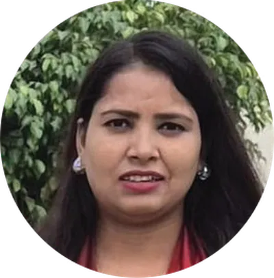
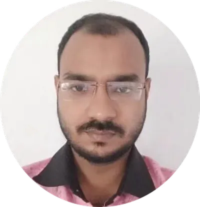

Ph.D.
Doctoral graduates
Home
Alumni
Ph.D. Graduates
Explore doctoral alumni who led thesis projects, advanced experimental methods, and expanded
the lab's research directions at Vyoma Lab.
Ph.D. Graduate
Sudipto Behera
Topic of research: Silica aerogel based insulation systems for cryogenic insulation applications.
About: Sudipto Behera is a PhD research scholar at IIT Delhi in the Department of Textile and Fibre Engineering, working on aerogel-based insulation materials and their integration into textiles for cold weather and cryogenic applications. His research focuses on developing efficient, scalable thermal insulation systems, combining materials science and textile engineering to address real-world challenges in extreme temperature conditions.
Ph.D. Graduate
Sujaan Kaushik
Topic of research: Biopolymeric aerogels for extreme cold weather textile systems.
About: Sujaan Satish Kaushik is a PhD researcher at the Indian Institute of Technology Delhi in the Department of Textile and Fibre Engineering. His work focuses on the development of biobased aerogel materials for thermal insulation applications, particularly in cold-weather garments and personal thermal management systems. His interests includes engineering lightweight, breathable, and environmentally sustainable materials that offer high thermal performance while maintaining wearer comfort.
Ph.D. Graduate
Achievements: Indian Patent : "PROCESS FOR PREPARING THERMALLY INSULATING COMPOSITE FIBRES AND PRODUCT THEREOF".
Publications: Book Chapters : "Introduction to Carbon Footprint in Textiles and Fashion Sector", "Biopolymers in portable electronics: Applications and case study", "Nano-based Textile Dyeing and Printing in Interior Design and Home Furnishings", "Conversion of Biomass into Quantum Catalysts for Wastewater Treatment", "Quantum Catalysis for the Analysis of Organic Dyes in Textile Wastewater".
Kumar Ghosh
Topic of research: Silica aerogel / Other additives integrated meltspun fibres.
About: His research integrates principles of materials science and textile engineering to design efficient and scalable insulation solutions. Through this work, he aims to address practical challenges associated with extreme temperature conditions and contribute to the advancement of next-generation functional textiles.Achievements: Indian Patent : "PROCESS FOR PREPARING THERMALLY INSULATING COMPOSITE FIBRES AND PRODUCT THEREOF".
Publications: Book Chapters : "Introduction to Carbon Footprint in Textiles and Fashion Sector", "Biopolymers in portable electronics: Applications and case study", "Nano-based Textile Dyeing and Printing in Interior Design and Home Furnishings", "Conversion of Biomass into Quantum Catalysts for Wastewater Treatment", "Quantum Catalysis for the Analysis of Organic Dyes in Textile Wastewater".
Ph.D. Graduate
Sukirti Baliyan
Topic of research: Aerogel integrated nonwovens for extreme cold weather clothing.
About: Ms. Baliyan is working on designing high performance thermal insulation garments by integrating advanced materials like silica aerogel into textile systems. Rooted in design background, her specialisation lies in translating material innovation into wearable solutions.
Ph.D. Graduate
Bhavesh Thakur
Topic of research: Electrospun breathable filtration media for advanced face masks.

Ph.D. Graduate
Reena Yadav
Topic of research: Functionalization of p-aramid fibres for high performance applications.
About: Ms. Reena Yadav, PhD scholar working on enhancing the functional and mechanical properties of p-aramid fibers using supercritical CO₂ and nanoparticles. The research focuses on applications like EMI shielding, conductive materials, sensors, and energy storage.

Ph.D. Graduate
Mahafuj Ali
Topic of research: Cooling textiles for advanced thermal management.
About: Mahafuj Ali is a researcher at IIT Delhi in the Department of Textile and Fibre Engineering. His work focuses on cooling textiles for advanced thermal management. He is interested in developing innovative solutions for thermoregulation in urban and extreme heat environments. His research combines heat transfer mechanics with textile design to address real-world challenges in climate adaptation and human comfort.
Ph.D. Graduate
Achievements: Best Poster - Sire Symposium 2026- Ultralight Bio-based aerogels as a sustainable alternative for thermal energy insulative garments, APA International Conference on Polymers for Advanced Technology, Oct 13th -15th Udaipur, Rajasthan, India.
Afeeha Parveen
Topic of research: Ceramic and PI aerogels for electronic applications.
About: Afeeha Parveen works on developing boron nitride and aramid based aerogels, which are lightweight and flexible materials with advanced electrothermal insulation. By tailoring their structure and composition, she achieves low thermal conductivity and excellent dielectric performance. These multifunctional insulators are designed for extreme environments, with applications in energy systems and fire protective gear.Achievements: Best Poster - Sire Symposium 2026- Ultralight Bio-based aerogels as a sustainable alternative for thermal energy insulative garments, APA International Conference on Polymers for Advanced Technology, Oct 13th -15th Udaipur, Rajasthan, India.